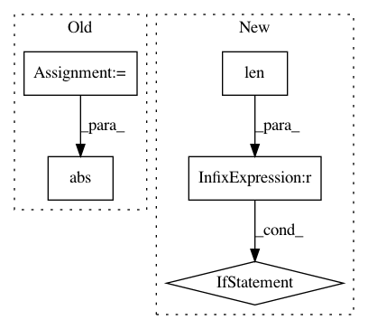

9cf2bcdb24f23a17ec11e69b8885851771dfd3d8,cube/models/vocoder.py,BeeCoder,learn,#BeeCoder#Any#Any#Any#,121
Before Change
def learn(self, wave, mgc, batch_size):
signal_fft = self.vocoder.fft(np.array(wave, dtype=np.float32) / 32768 - 1.0,
sample_rate=self.params.target_sample_rate, use_preemphasis=False)
// print(signal_fft)
last_proc = 0
dy.renew_cg()
total_loss = 0
losses = []
for mgc_index in range(len(mgc)):
curr_proc = int((mgc_index + 1) * 100 / len(mgc))
if curr_proc % 5 == 0 and curr_proc != last_proc:
while last_proc < curr_proc:
last_proc += 5
sys.stdout.write(" " + str(last_proc))
sys.stdout.flush()
output_power = self._predict_one(mgc[mgc_index], runtime=False)
// print(np.abs(signal_fft[mgc_index]))
fft_pow = 20 * np.log10(np.maximum(1e-5, np.abs(signal_fft[mgc_index]))) // np.abs(signal_fft[mgc_index])
min_level_db = -100.0
fft_pow = np.clip((fft_pow - min_level_db) / -min_level_db, 0, 1)
// print (fft_pow)
After Change
pred_output = self._predict_one(mgc[mgc_index], runtime=False)
if mgc_index != len(mgc) - 1:
losses.append(dy.squared_distance(pred_output, dy.inputVector(
wave[mgc_index * self.UPSAMPLE_COUNT:mgc_index * self.UPSAMPLE_COUNT + self.UPSAMPLE_COUNT])))
if len(losses) >= batch_size:
loss = dy.esum(losses)
total_loss += loss.value()
loss.backward()
In pattern: SUPERPATTERN
Frequency: 3
Non-data size: 5
Instances
Project Name: tiberiu44/TTS-Cube
Commit Name: 9cf2bcdb24f23a17ec11e69b8885851771dfd3d8
Time: 2018-10-25
Author: boros@adobe.com
File Name: cube/models/vocoder.py
Class Name: BeeCoder
Method Name: learn
Project Name: samuelclay/NewsBlur
Commit Name: bd334ef20fdccb74d310ca00b1134388645ba0a5
Time: 2014-07-21
Author: samuel@ofbrooklyn.com
File Name: vendor/readability/encoding.py
Class Name:
Method Name: get_encoding
Project Name: shubhomoydas/ad_examples
Commit Name: f707bd92107953e6d8ba05d2dff3ee3133b2d805
Time: 2018-11-25
Author: smd.shubhomoydas@gmail.com
File Name: python/graph/simple_gcn.py
Class Name: SimpleGCN
Method Name: _fit